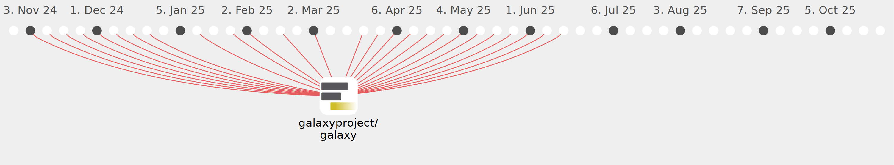

ElectronicBlueberry

Commits all-time: 1437
Commits last year: 151

(151)
- 309ac4e
- 33723c3
- 401d558
- b91415d
- e8d900e
- a0b1c86
- 0b09625
- 1a11037
- 179d634
- b15ed48
- ebabe9b
- 62d046e
- 265a439
- d00e376
- 8449873
- ac89ccd
- 8ad8221
- 61de85d
- ed093cb
- 2a820d4
- ff6b567
- bd8a5a1
- 4083580
- 52c4de4
- 38224b1
- b489bd5
- 4df4a54
- 8dfbc2a
- 988d47a
- e907457
- 1ae03b3
- d7b6a6e
- 53bf612
- 3526a42
- 8e7d8b7
- 1116570
- 4557478
- 602665e
- 282ec87
- 66ed471
- dcb3978
- ac74321
- 6a31907
- 7b82f51
- 9ae55b0
- 863527f
- 4a84554
- a3b496b
- b93aab6
- 1605384
- f344df0
- a44dc34
- 34598a0
- 3bc870e
- 46aa036
- 74f0e3d
- b202a78
- 24f9eca
- cf7aa2c
- 5ea3281
- fdce0f3
- 5c2105d
- 4924996
- 6d2867f
- 07e4371
- 0a04e81
- fa7b1c8
- a8cb0ea
- 56e71a1
- 137217f
- 7d3fdcc
- 31fb902
- 81415e6
- 6f92dcd
- f4c0393
- 9148d87
- 49d2528
- 4e2417f
- 4a4e0c9
- 333b855
- 1331993
- 8b0e0bc
- 80385f2
- 126f1e1
- 1444d4c
- 93695f4
- 0a6ebde
- 5573302
- 37e91a2
- abbc5f3
- 093e29f
- 7dc48c8
- 92c8df6
- 48c5770
- 4af70ec
- 40b8fd7
- c3841ad
- 3e607e2
- 9b59f38
- 1a8d4c9
- 7c21881
- 56667de
- 8b4260e
- c5a00b7
- af36b5c
- a0cc2f4
- c73ca35
- 1d81ba7
- ef6125e
- c8a78cc
- 3bbc1a6
- 4c4aaf2
- d4b5acc
- 9430408
- 119e9e7
- 9245f83
- dfe0269
- 934d178
- 3d6dd63
- 4e7f8dd
- 315c82e
- 8347404
- 35826e3
- 45915a3
- 5c60ccd
- 6804664
- 8de570d
- 37fcaa6
- e7b60b7
- 4a431c4
- 090f0d6
- 14da48f
- be20913
- 7eaf6bf
- 79a6944
- 8545347
- 8166739
- 47b061b
- b59d12a
- c8d874c
- 88b0e13
- f104407
- 1b96ceb
- 880871f
- 06c7594
- fec6ebf
- bb676d9
- daec7e1
- 60c107c
- 9f4b91a
- c7a257d